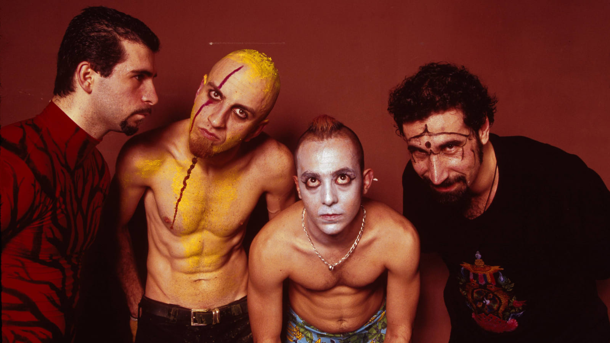

SOADSOADSOADSOAD
SYSTEM OF A DOWNSYSTEM OF A DOWNSYSTEM OF A DOWNSYSTEM OF A DOWN
Serj Tankian es un músico, compositor y activista de origen armenio-estadounidense, conocido principalmente como el líder y vocalista de la banda de rock System of a Down. Nació el 21 de agosto de 1967 en Beirut, Líbano, en una familia armenia. Debido a la guerra civil en Líbano, su familia emigró a Estados Unidos cuando tenía solo siete años, estableciéndose en Los Ángeles. En la década de 1990, Tankian cofundó System of a Down con Daron Malakian, Shavo Odadjian y John Dolmayan. La banda alcanzó un gran éxito comercial y crítico con álbumes como "Toxicity" y "Mezmerize/Hypnotize", destacándose por su estilo único que fusiona metal, rock alternativo y elementos de música folclórica armenia.
Además de su carrera musical, Serj Tankian es conocido por su activismo en diversas causas sociales y políticas, especialmente en relación con los derechos humanos y el reconocimiento del genocidio armenio. Ha utilizado su plataforma para abogar por la justicia y la conciencia social, además de expresar su preocupación por temas como el medio ambiente y la justicia económica.
Tankian también ha lanzado varios álbumes como solista, explorando una amplia gama de estilos musicales y letras profundas y reflexivas. Además de su trabajo musical, ha incursionado en el mundo del cine, contribuyendo con bandas sonoras y produciendo documentales.
Daron Malakian es un músico y compositor estadounidense de origen armenio, reconocido principalmente por ser el guitarrista principal, compositor y cofundador de la banda de rock System of a Down. Nació el 18 de julio de 1975 en Hollywood, California.
Malakian mostró interés por la música desde una edad temprana y comenzó a tocar la guitarra a una edad joven.
Como miembro de System of a Down, Malakian ha contribuido significativamente a la composición de muchas de las canciones más reconocidas de la banda. Su estilo distintivo de guitarra, que combina riffs pesados con melodías intrincadas y progresiones únicas, ha sido una parte integral del sonido característico de System of a Down.
Además de su trabajo con System of a Down, Malakian ha participado en otros proyectos musicales, como su banda de metal alternativo Scars on Broadway, donde ha explorado diferentes facetas de su creatividad como compositor y músico. A lo largo de su carrera, Daron Malakian ha sido elogiado por su habilidad técnica en la guitarra, su originalidad como compositor y su contribución al éxito y la influencia de System of a Down en la escena musical internacional. Su legado musical sigue siendo relevante para numerosos fanáticos de la música en todo el mundo.
Shavo Odadjian es un músico estadounidense de origen armenio, reconocido principalmente por ser el bajista de la banda de rock System of a Down. Nació el 22 de abril de 1974 en Yerevan, Armenia, pero se trasladó a Los Ángeles, California, cuando era niño. Odadjian se unió a System of a Down poco después de su formación en la década de 1990, convirtiéndose en el bajista de la banda. Su estilo de tocar el bajo, que combina ritmos poderosos con melodías intrincadas, ha contribuido al sonido distintivo de System of a Down. Además de su trabajo con la banda, Shavo Odadjian ha participado en otros proyectos musicales y colaboraciones. También ha incursionado en el mundo del cine y la producción audiovisual.
John Dolmayan es un músico estadounidense de origen armenio, conocido principalmente por ser el baterista de la banda de rock System of a Down. Nació el 15 de julio de 1973 en Beirut, Líbano, pero se trasladó a Los Ángeles, California, con su familia cuando era niño. Dolmayan se unió a System of a Down en sus primeras etapas en la década de 1990, convirtiéndose en el baterista de la banda. Su estilo de tocar la batería, que combina ritmos intensos y complejos con una gran energía en el escenario, ha sido una parte integral del sonido distintivo de System of a Down.
John Dolmayan ha participado en otros proyectos musicales y colaboraciones. También es conocido por su interés en la industria del cómic y es propietario de una tienda de cómics en Las Vegas.